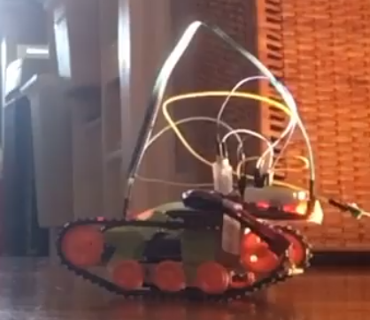
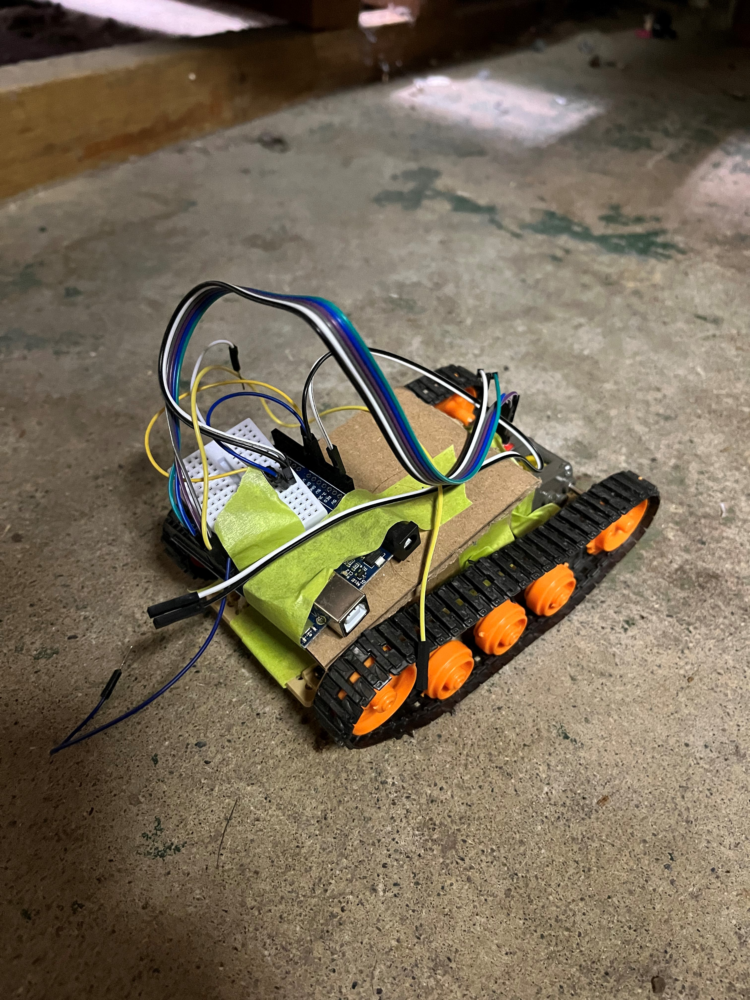

R2-D2 replica that dispenses alcohol
One of the biggest UBC Engineering events of the year is E-week, a massive weeklong interdepartmental competition where engineering student societies battle it out to prove that their specific engineering discipline is the best through a series of competitions. Most of these competitions involve drinking in some form (it's university, can you really blame us?).
Most of the competitions are some form of skill-based challenge done in the moment (ex. playing Smash Bros. or being carted around on a chariot while downing beers while your teammates stack cups with their elbows; again, university), but there are some that require a submission to be prepared and submitted. One event in the second category has always applied to me: Ball Model. In this event, you are tasked with building a device that (a) conceals and (b) dispenses some form of alcoholic beverage for an event called Old Red New Red, which is an alumni mixer held during E-week. The reasoning behind this event was that in days of old, the engineers didn't get a liquor license for the engineering ball, so they would have to smuggle in alcohol to the event, so the Engineering Undergraduate Society outsourced the creation of devices to conceal and dispense alcohol through this event!
I first got involved with the Electrical and Computer Engineering Student Society (which I ultimately became president of) through getting tapped to work on Ball Model. By that point, I had gained a reputation among our year for being very project-focused and keen to take on ambitious electronics projects. I ended up contributing to the Ball Model effort for 3 years in a row and leading it for the last two.
The first Ball model submission that I worked on was a desktop computer for E-week 2023. This had a Raspberry Pi inside that dispensed cosmopolitans (cocktails) through 4 parallel peristaltic pumps driven by a 4-channel optoisolated MOSFET driver (in hindsight I could have just used a single relay but there was some talk of mixing the drink while pouring). The Raspberry Pi was running a voice recognition script that would (in theory) pour a drink when prompted with "drink please" (in practice the event was far too loud for this to work reliably). We ended up winning second place for that, mostly on our drink taste and also because the judges were somewhat drunk by the time they got to our station.
My second Ball model submission (first one that I led) was a diorama of BC Hydro's Ruskin Dam for E-week 2024. It dispensed gin and tonic. This taught me a lot about what not to do when building a Ball Model, I wasn't very happy with this submission.
I had the idea for the 2025 Ball Model the day after presenting the 2024 Ball Model (before E-week was over) and right after swearing that I would never be involved with Ball Model again. It arrived fully-formed, like a bolt of lightning. The idea was to build a life-sized replica of R2-D2. I immediately started generating ideas on how to build it.
While it didn't end up exactly like how I had dreamed it would, I ended up learning a ton from this project and am quite happy with the results.
The idea
Before fully diving into project work, I spent some time nailing down what I wanted this replica of R2-D2 to be. Of course, it needed to meet the requirements of the challenge: to store and dispense an alcoholic beverage. I decided early on that I didn't need this to be a photorealistic replica of R2-D2, mainly because that would be far too expensive, but I wanted to capture enough small details that people would be somewhat impressed. I also originally wanted this replica to be driveable with motors in the feet (spoiler alert: this ended up being too ambitious). Finally, I wanted it to have R2's classic bleeps and bloops.
CAD
To start this project, I first needed a comprehensive reference for the dimensions of R2-D2. Luckily, a lot of people have spent a lot of time building super accurate replicas of R2-D2 and have published their drawings online! The best resource I found for this was the R2-D2 builder's club, which has several standardized versions of R2-D2 drawings so that members can make parts that are compatible with one another. I decided early on that my replica would be something that looked like R2-D2 from a reasonable distance, but a fully accurate replica was not in the cards for me for this project (I have been thinking about it for the not so distant future though). This meant I just had to go over the drawings and model the features I wanted to include based on their dimensions. I ended up using Fusion 360 for this project, as I forsaw the end of my free student SolidWorks license quickly approaching and wanted to get comfortable with a CAD software that I would be able to use after university. I also decided to only model the structure, as bringing in details would require importing STLs to Fusion, which is always a bit of a hack. After a little while, I was done the CAD and ready to move on with the rest of the project!

Gathering materials
What I was most concerned about was where to find some of the larger parts, specifically the outer skin and the dome. R2-D2 is 18 inches in diameter (I learned to design in inches after Ball Model 2024, when I went to the hardware store and gave dimensions in centimeters and they looked at me funny), which is not an easy diameter to find a tube or a dome for. I looked into getting cardboard sonotube from a hardware store, but they all cost over $100 and were only sold in 10ft lengths.
Luckily, I was still involved with UBC Rocket at the time, and they were in the process of winding down their Whistler-Blackomb liquid rocket project, which was intended to be 18 inches in diameter. By sheer luck, they had several sections of 18" sonotube that had already been cut down and that they were happy to part with!
Then came the problem of finding the dome. This ended up being a more DIY project as buying an 18" dome was going to be even more expensive than a sonotube (R2's original dome came from a lamp that was made in the 70s in the UK, which you of course can't just buy anymore). I found out that a lot of the garbage cans that are around the UBC campus are about 18" in diameter and have a dome-shaped top. I ended up making 3 paper mache casts of these domes over a couple of weekends (I had to explain several times why I was hanging out in the bathroom with Mod Podge covering my hands, it didn't help that I was trying to keep the project a secret and being cryptic) and I fused several sections together. Then I did some more finishing work to the bottom of the dome (R2's dome is not just a cylinder, it has a 3" cylindrical portion at the bottom) and smoothed it out with wood filler.
Since I originally wanted this replica to be driveable, I settled on windshield wiper motors as the main drive motors, mainly for their low cost. I went to a junkyard and picked out a matching pair of motors from a 1995 Ford F-350.
Building
Being in school meant I didn't actually get a chance to start diving into the build before winter break, about 4 weeks before the deadline of ORNR. I spent about a week hand-tracing the dimensions onto plywood and cutting them out. In hindsight I should have printed the templates out and stuck them to the plywood to make it faster and more repeatable, this is just another learning from this project. The main structure went together in about a week, and it was pretty exciting to watch it come together!
It was around this time that my dream of having this replica move around died. I realized that I had routed the hole for the wheel bearing offset from the center axis of the motor, and I didn't have enough plywood or time to fix it. In hindsight, it was a bit ambitious to try and make this replica driveable with less than 4 weeks to build the entire thing, so it was a bit of a blessing in disguise.
Detail work
One thing I always underestimate is the amount of time that is spent on details of a project. I generally go for function over form, so details aren't something that I think about very often, but in this project the details were definitely front and center. By the time I started working on details, I had moved to campus and started school (I subletted a place on campus during my last school term to soft-launch my post-graduation independence), so details were mostly done on late nights after school. I had a lot more help with this part of the project as everyone was on campus and getting super excited for E-week. We spent many late nights and probably over $100 on spray paint stenciling, painting, re-stenciling, touching stuff up to make it look perfect. We also got some questionable access to UBC Subbots' 3D printer, which allowed us to print vent pieces and the critical eye pieces. I also had a lot of help from people making fairings out of foamboard.
Electronics
Again, because of the compressed timeline, I enlisted a bit of help for the electronics.

The electronics are pretty simple, just an Arduino Uno, an L9110s dual H-bridge switched with PWM to drive the motors, the two DC motors from the gearbox kit, a 433 MHz RF link receiver, and a 2S 1300 mAh LiPo to power everything.
There is a surprising amount of code for what should have been a simple program to receive the data from the receiver and generate PWM signals to drive the two motors. Most of this stems from the fact that I had to write code to generate the PWM signals in firmware, due to the fact that the hardware timers that the Arduino uses to generate PWM on its own are used by the RadioHead library that I used for radio communication, and that I could never get any official software PWM library to work properly. If you want to take a look at the code, it is available here.


There are a couple of things that I would change with this project if I were to do it again (which I definitely will, since I still have the track base). One of them is to allow the motors time to ramp up/down, because with my code, the motors were going from stopped to whatever speed I set on the remote pretty much instantly, which was pretty hard on the motors and caused them to become quite hot. Another thing I would do in the future is to add some autonomous functionality to it. I have some GPS and compass modules lying around, and I've had an idea for an autonomous robot that could do a waypoint mission for a while, and this tracked base is a perfect base for a project like that.